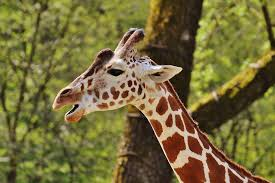
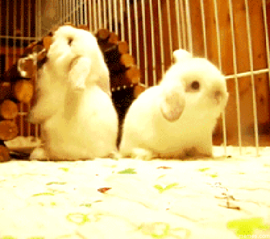
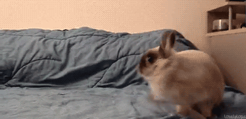

Czekolada pitna - ziarna kakaowca są poddawane fermentacji, suszone, a następnie oczyszczane i prażone. Następnie miażdży się ich skorupki i odsiewa je oraz usuwa zarodki. Z pokruszonych ziaren wydobywa się tłuszcz za pomocą
wyciskania, wyżymania lub rozpuszczalnika. Pozostaje sucha substancja, tzw. makuchy. Zostają one rozdrobnione i wysuszone w temperaturze 20 stopni Celcjusza.
przesiewa. Otrzymany ciemny, aromatyczny proszek mieszany jest z cukrem i otrzymuje się czekoladę w proszku.
Czekolada twarda - pokruszoną śrutę kakaową miele się w wysokiej temperaturze. Powstaje masa zwana likierem czekoladowym. Miesza się ją i rozgniata, aż powstanie miałka i tłusta substancja, puszysta, o aksamitnej gładkości. Poddawana jest ona konszowaniu - mieszaniu i rozcieraniu na sucho. Dzięki temu staje się bardziej plastyczna, zmniejsza się jej wilgotność i znikają resztki kwasowości. Pod koniec procesu konszowania dodaje się masło kakaowe i ewentualnie lecytynę. Cały czas masa jest łagodnie podgrzewana do odpowiedniej temperatury (80-85 stopni dla czekolady gorzkiej, 55-60 stopni dla czekolady mlecznej). Następnie czekoladę się powoli schładza, aby tłuszcz kakaowy jednolicie się skrystalizował. Odpowiednio schłodzona (ale płynna) masa jest wlewana do form. W tunelu chłodniczym, w temperaturze około 6-7 stopni czekolada stygnie i krzepnie, kurcząc się w formach. Ostatnim etapem produkcji jest wybicie tabliczek z form i zapakowanie.
 Czekolada pitna - ziarna kakaowca są poddawane fermentacji, suszone, a następnie oczyszczane i prażone. Następnie miażdży się ich skorupki i odsiewa je oraz usuwa zarodki. Z pokruszonych ziaren wydobywa się tłuszcz za pomocą wyciskania, wyżymania lub rozpuszczalnika. Pozostaje sucha substancja, tzw. makuchy. Zostają one rozdrobnione i wysuszone w temperaturze 20 stopni Celcjusza. Następnie przerabia się je na proszek i przesiewa. Otrzymany ciemny, aromatyczny proszek mieszany jest z cukrem i otrzymuje się czekoladę w proszku.
Czekolada twarda - pokruszoną śrutę kakaową miele się w wysokiej temperaturze. Powstaje masa zwana likierem czekoladowym. Miesza się ją i rozgniata, aż powstanie miałka i tłusta substancja, puszysta, o aksamitnej gładkości. Poddawana jest ona konszowaniu - mieszaniu i rozcieraniu na sucho. Dzięki temu staje się bardziej plastyczna, zmniejsza się jej wilgotność i znikają resztki kwasowości. Pod koniec procesu konszowania dodaje się masło kakaowe i ewentualnie lecytynę. Cały czas masa jest łagodnie podgrzewana do odpowiedniej temperatury (80-85 stopni dla czekolady gorzkiej, 55-60 stopni dla czekolady mlecznej). Następnie czekoladę się powoli schładza, aby tłuszcz kakaowy jednolicie się skrystalizował. Odpowiednio schłodzona (ale płynna) masa jest wlewana do form. W tunelu chłodniczym, w temperaturze około 6-7 stopni czekolada stygnie i krzepnie, kurcząc się w formach. Ostatnim etapem produkcji jest wybicie tabliczek z form i zapakowanie.


- VIDEO -
- AUDIO -


 wyciskania, wyżymania lub rozpuszczalnika. Pozostaje sucha substancja, tzw. makuchy. Zostają one rozdrobnione i wysuszone w temperaturze 20 stopni Celcjusza.
przesiewa. Otrzymany ciemny,
wyciskania, wyżymania lub rozpuszczalnika. Pozostaje sucha substancja, tzw. makuchy. Zostają one rozdrobnione i wysuszone w temperaturze 20 stopni Celcjusza.
przesiewa. Otrzymany ciemny, Cały czas masa jest łagodnie podgrzewana do odpowiedniej temperatury (80-85 stopni dla czekolady gorzkiej, 55-60 stopni dla czekolady mlecznej). Następnie czekoladę się powoli schładza, aby tłuszcz kakaowy jednolicie się skrystalizował. Odpowiednio schłodzona (ale płynna) masa jest wlewana do form. W tunelu chłodniczym, w temperaturze około 6-7 stopni czekolada stygnie i krzepnie, kurcząc się w formach. Ostatnim etapem produkcji jest wybicie tabliczek z form i zapakowanie.
Cały czas masa jest łagodnie podgrzewana do odpowiedniej temperatury (80-85 stopni dla czekolady gorzkiej, 55-60 stopni dla czekolady mlecznej). Następnie czekoladę się powoli schładza, aby tłuszcz kakaowy jednolicie się skrystalizował. Odpowiednio schłodzona (ale płynna) masa jest wlewana do form. W tunelu chłodniczym, w temperaturze około 6-7 stopni czekolada stygnie i krzepnie, kurcząc się w formach. Ostatnim etapem produkcji jest wybicie tabliczek z form i zapakowanie.